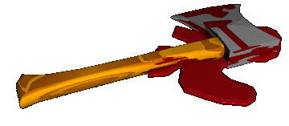

Implementation and Results

Implementation
- Implemented in the
RedAx
meta-ATP system
- Submission to the object ATP system through
SystemOnTPTP
Testing
- With SPASS 2.0
- 60 FOF problems from the TPTP, randomly selected from the 426
with axioms that SPASS could not solve in 600s
- 3600s time limit, 60s per axiom reduced problem ...
|
| SPASS 2.0
| RedAx
| Both
|
| Solved
| 7
| 14
| 6
|
- Results table ...
- With Vampire 5.0
- 73 FOF set theory and geometry problems from the TPTP,
with a difficulty rating of 1.00
- 3600s time limit, 60s per axiom reduced problem ...
|
| Vampire 5.0
| RedAx
| Both
|
| Solved
| 0
| 4
| 0
|
- Results table ...